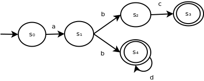

Overview
A nondeterministic finite automaton (NFA for short) is another tool that can be used to recognize strings as part of a regular language.
Example of an NFA
The following is an example of an NFA:
It contains 5 states and 5 state transitions.
State s0 is the initial state, while s3 and s4 are accepting states.
State s1 illustrates a construction that is not allowed in a DFA but is allowed in an NFA: a state with multiple transitions for the same symbol.
This NFA accepts the language represented by the following regular expression:
R = abc ∪ abd*
Anatomy
In general, an NFA consists of:
In NFAs, we have a few inherent structural restrictions, as follows:
The NFA parsing algorithm
To determine whether s = {σ1σ2...σn} belongs to the language recognized by NFA with states S, transitions T[si, t], initial start si:
Set Scurrent = {si}
For i = 1 to n
symbol = σi
Snext = {}
For each scurrent in Scurrent
snext = T[scurrent, symbol]
If snext exists
Add snext to Snext
If Snext is empty
Reject
Scurrent = Snext
End for
If Scurrent contains an accepting state
Accept
Otherwise
Reject
Informally, we are running our NFA algorithm but instead of tracking the next definitive state, we track all possible states that could be reached through the next transition.
We reject the language if we end with a set of states at the end of our input that does not contain an accepting state or run out of possible transitions. Note that it's sufficient to find just one successful path through the NFA for it to accept an input string.
Parsing examples
For s = abc
| States | Input symbol | Action |
|---|---|---|
| {s0} | a | Transition to {s1} |
| {s1} | b | Transition to {s2, s4} (since s1 has two transition for symbol b) |
| {s2, s4} | c | Transition to {s3} (since s2 has a transition to s3 for symbol c, while s4 has valid transition) |
| {s3} | $ (end of string) | Accept (since Scurrent contains s3 which is an accepting state) |
For s = ab
| States | Input symbol | Action |
|---|---|---|
| {s0} | a | Transition to {s1} |
| {s1} | b | Transition to {s2, s4} (since s1 has two transition for symbol b) |
| {s2, s4} | $ (end of string) | Accept (since Scurrent contain s4 which is an accepting state) |
For s = abd
| States | Input symbol | Action |
|---|---|---|
| {s0} | a | Transition to {s1} |
| {s1} | b | Transition to {s2, s4} (since s1 has two transition for symbol b) |
| {s2, s4} | d | Reject (since no transition exists from s2 or s4 for symbol d) |
For s = a
| States | Input symbol | Action |
|---|---|---|
| {s0} | a | Transition to {s1} |
| {s1} | $ (end of string) | Reject (since Scurrent does not contain an accepting state) |
Reflection
An NFA is a less structurally restrictive iteration of a DFA.
Despite this, we will later illustrate that the set of languages that can be recognized by these tools are equivalent.
GitHub Repository: https://github.com/bprollinson/ripal
Copyright © 2017 Brendan Rollinson-Lorimer